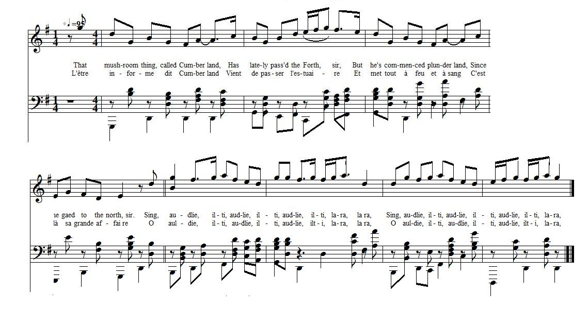

That mushroom thing, called Cumberland
L'être informe dit "Cumberland"
From Peter Buchan's "Appendix of Jacobite Songs to Alexander Macdonald's Wanderings of Prince Charles and Flora Macdonald"
Tune - MélodieThe unknown tune is replaced here by "Push about the Jorum"
from Aird's "Selection of Scotch, English, Irish and Foreign Airs", vol. 1, 1782; No. 111, pg. 39.
Sequenced by Christian Souchon

|
To the tune:
"Mushroom thing" is evidently no compliment paid to the corpulent Duke of Cumberland. The song "Push about the Jorum" has many titles, one of them being "Touch the Thing". Burns used the tune as the vehicles for bawdy songs in his "Merry Muses of Caledonia" . A "jorum" was “a (new) chamberpot, used as a mug in drinking healths or toasts. Source "The Fiddler's Companion" (cf. Liens). |
A propos de la mélodie:
L'expression anglaise "Mushroom thing", (chose spongieuse), n'est certainement pas un compliment à l'adresse du corpulent Duc de Cumberland. Le chant "Faites passer le Jorum" a plusieurs titres, dont l'un est "touchez la chose". Burns a utilisé cette mélodie pour des chansons paillardes dans ses "Joyeuses muses de Calédonie" . Un "jorum" était un pot de chambre (neuf) utilisé pour porter des toasts. Source "The Fiddler's Companion" (cf. Liens). |

|
THAT MUSHROOM THING, CALLED CUMBERLAND.
1. That mushroom thing, called Cumberland, Has lately pass'd the Forth, sir ; But he's commenced plunderland, Since he gaed to the north, sir. Sing, audlie, ilti, audlie, ilti, audlie, ilti, lara, lara, Sing, audlie, ilti, audlie, ilti, audlie, ilti, lara, lara. 2. He is the first of all the line Called Protestant, I swear, sir, That ever kissed our ladies fine, Or breath'd in Scottish air, sir. Sing, audlie, etc. 3. Our priests he has incarcerate, And burned our altars down, sir, The godless Whigs rejoice at that, And bless the fire-brand loon, sir. Sing, audlie, etc. 4. But when our tartan lads come back, And Messieurs land at Dover, Well singe the lousy German pack, And drive them to Hanover. Sing, audlie, etc. 5. Then all the brood, o'erwhelm'd with dool, I'll pledge my faith and troth, sir, Instead of tarts and pies at Yule, They'll slab their turnip broth , sir. Sing, audlie, etc. Source: "Jacobite Songs and Ballads" edited by Gilbert S. McQuoid, London, 1888, N°121, Page 255 (From Peter Buchan's "Appendix of Jacobite Songs to Alexander Macdonald's Wanderings of Prince Charles and Flora Macdonald"). |
L'ETRE INFORME DIT "CUMBERLAND"
1. L'être informe dit "Cumberland" Vient de passer l'estuaire Et met tout à feu et à sang: Il est à son affaire O auldie, ilti, audlie, ilti, audlie, ilti, lara, lara, O auldie, ilti, audlie, ilti, audlie, ilti, lara, lara, 2. Des Luthériens c'est le premier, - Et nos dames se gaussent, Dont la main il ose baiser - A venir en Ecosse. O auldie, ilti... 3. Il met en prison nos pasteurs, Brûle nos sanctuaires. Les Whigs nagent dans le bonheur Bénissant l'incendiaire. O auldie, ilti... 4. Si l'armée des tartans revient Et ces Messieurs de Douvres, Le poil roussi, gueux de Germains, Vous fuirez vers Hanovre! O auldie, ilti... 5. Toute la bande, sort cruel, Devra, ce que tous savent, En guise de tarte à Noël Laper sa soupe aux raves . O auldie, ilti... (Trad. Christian Souchon (c) 2010) |